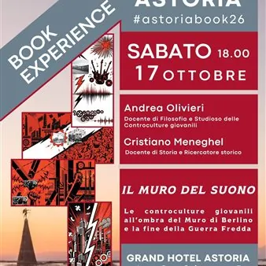

sab 17 ott · dalle 18:00
Book Experience: Il muro del suono
Cristiano Meneghel e Andrea Olivieri presentano la conferenza “Il muro del suono” al Grand Hotel Astoria di Grado nell’ambito della rassegna culturale Book Experience “Sabato in Astoria” - Sabato 17 ottobre – ore 18.00. Ultimo appuntamento, poi la pausa invernale, per i…
 Indicazioni
Indicazioni
- Costi e prenotazioni
- Costo non indicato · Prenotazione non indicata
- Programma
- Programma da verificare. Apri la fonte ufficiale per orari e possibili aggiornamenti.
- In caso di maltempo
- Nessuna indicazione specifica pubblicata.
- Note
- Acquisito automaticamente dalla fonte.
L’EVENTO
Descrizione completa
Cristiano Meneghel e Andrea Olivieri presentano la conferenza “Il muro del suono” al Grand Hotel Astoria di Grado nell’ambito della rassegna culturale Book Experience “Sabato in Astoria” - Sabato 17 ottobre – ore 18.00.
Ultimo appuntamento, poi la pausa invernale, per i pomeriggi culturali presso il Grand Hotel Astoria di Grado con il secondo appuntamento autunnale il 17 di ottobre alle ore 18.00.
Presso il Piano Bar ci sono le testimonianze storiche e in musica di due figure importanti dell’universo culturale gradese e del Friuli Venezia Giulia. La penetrazione della musica del blocco occidentale in Unione Sovietica e tra i Paesi del Patto di Varsavia è un capitolo molto importante della Guerra Fredda.E anche se può sembrare strano, il dilagare della musica rock nel blocco sovietico, dagli anni Sessanta in poi, ha contribuito ad accelerarne il crollo.
Tema di questo incontro è il modo in cui un genere musicale, cioè nello specifico la musica rock, sia diventato un'arma politica. Un'arma del tutto involontaria, ma di una potenza devastante, capace non solo di far tremare i regimi della Guerra Fredda, ma proprio di contribuire materialmente ad abbattere il muro di Berlino. Temutissimo dai vertici dell’Unione Sovietica e dei Paesi allineati, per la portata naturalmente rivoluzionaria e conflittuale di questo genere, il rock, con la sua forte carica di libertà espressiva, proveniente da un mondo contro il quale ideologicamente si combatteva, costituiva una minaccia da cui l’uomo nuovo sovietico doveva essere difeso, così come da ogni possibile contaminazione dovuta all’influenza filo-capitalista nelle arti. Da una parte un blocco sovietico che esigeva conformismo assoluto, dedizione allo Stato, controllo capillare sulla vita degli individui; dall'altra l'occidente capitalista da cui arrivava questo suono nuovo e travolgente: il rock. E per la propaganda del blocco orientale una chitarra elettrica era pericolosa quasi quanto un'arma da fuoco, perché il rock celebrava l'individualismo, la ribellione personale, il tempo libero fine a sé stesso. E incoraggiava il ballo scatenato. Un movimento fisico istintivo, incontrollabile, che si poneva in diretto contrasto con le rigide parate militari e le marce sincronizzate approvate dal regime. Se l'ideologia del blocco orientale voleva cittadini inquadrati, il rock era pronto a rispondere con il caos creativo.
L’incontro presso il Piano Bar del Grand Hotel Astoria offrirà al pubblico l’occasione di dialogare con i relatori e di immergersi in storie, accadimenti e situazioni inediti in un momento che unisce storia, musica, territorio e passione per la cultura con conversazioni e dialoghi attraverso testimonianze e documenti.
Biografia Relatori
Cristiano Meneghel , nasce a Grado nel 1980. Laureatosi con una tesi sulla storia dell'Azione Cattolica di Gorizia è docente di filosofia e storia presso il Polo Liceale di Gorizia. Ricercatore storico, collabora con diverse istituzioni culturali locali. Al suo attivo diverse pubblicazioni di carattere saggistico sulla storia di Gorizia, dell'Isontino e di Grado.
Andrea Olivieri , goriziano, si è laureato molto tempo fa in Filosofia all’Università di Trieste, dove ha conseguito il dottorato di ricerca in Estetica con una tesi sulla natura dell’immagine e sull’immaginazione nella filosofia moderna. Ha pubblicato articoli di ricerca filosofica su riviste di settore. Professore di Filosofia
e Scienze umane presso il Liceo delle Scienze Umane “S. Slataper” di Gorizia, ascolta e vive rock’n’roll da quasi mezzo secolo.
L’ingresso è libero e gratuito.
Info
Telefono: TgQPHd|||[] +39 0431 83550 TgQPHd|||[["tel:+39043183550",null,null,[null,null,null,null,null,null,null,null,null,null,null,null,null,null,null,[{"1218":[16,null,1]}]],16,null,"Chiama Grado",null,null,null,null,[[1791278672268820,146535892,3490801302],null,null,null,null,[[0,17]]],null,"f178f9ca-c23e-4cd6-a9c3-41a5cf366be0",[1]]] TgQPHd|||[] TgQPHd|||[] TgQPHd|||[]
E-mail: TgQPHd|||[] info@hotelastoria.it
IL PROGRAMMA
Programma e orari
Appuntamenti raccolti dalle fonti elencate. Dove manca un orario, non è ancora disponibile in questa scheda.
Programma pubblicato
- Dal 2026-10-17 al 2026-10-17
INFORMAZIONI UTILI
Prima di partire
- Controllare la fonte prima di partire.
ORGANIZZAZIONE